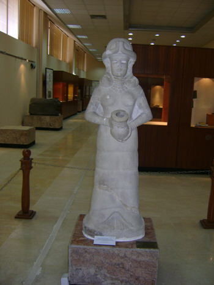
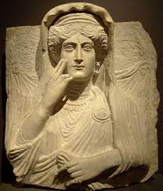

DIEU fontaine
La statue de la déesse de la fontaine, qui est faite de pierre blanche montre la déesse de la fertilité qui apporte l'eau, le secret de la vie. Elle implique une statue d'un canular, comme l'eau déversée dans le réservoir monte verticalement comme des pots système Almsttrqh dans le canal gravé au cœur de la statue et même le pot qui sortait des dieux avec ses mains. Lorsqu'il apparaît au spectateur que ces dieux déversement d'eau, notant qu'il ya un poisson froisse leurs manteaux haut et en bas. Barrow se réfère à l'importance de cette statue en disant: « Il est impossible d'être plus représentatif d'une autre statue, pas au courant des monuments orientaux visage connus La forme plus précise.» Il est à noter que la longueur de la statue de 1,42 m, et il semble que ce soit un sujet près du bassin cour construite Zimri Lim Palace. En général, « il semble y avoir une école technique influent et influencé par les méthodes de sculpture Alkanaani avec le début du deuxième millénaire avant notre ère, dans le Levant Bmant Marie, Babylone, Essen et Larsa et ceux de Ashnuna et d'autres, où il semble que la sculpture toute cette période dans ces villes appartiennent à l'école un art. » Barrow la transmission, le sujet du vase Aguarh / comme dans la déesse du printemps / efficacité à Rafidia, où déjà Sumériens que Ulloa position très élevée dans le domaine de l'art ce.

ORNINA
« « Ornina » est le temple du nom de la chanteuse syrienne, que les archéologues croyaient être le premier chanta sur la surface de la terre, et était en / 3500 / BC». « Ornina » chanteur et la musique et la danse dans le temple d'Ishtar dans la ville (Mary) situé dans le sud de la ville de Deir ez-Zor. Est une statue (Ornina) conservé au Musée national de Damas des chefs-d'œuvre des Arts Orient ancien. Avec une hauteur de 25,4 cm et une largeur de 13,5 cm, datant du début du deuxième millénaire avant notre ère. Trouvé dans le temple d'Ishtar dans la ville de Marie archéologique, un magnifique ivoire Albâtre en pierre. Ornina regarder sa statue, les traits de son expression du visage d'un sens de l'émotion humaine et mystique, et ses sourcils Azahran et sont reliés pour former deux crochets au-dessus des beaux grands yeux Hardtin et Mabertin la plus belle expression de la beauté de sa féminité et Vtantha, irradie l'intelligence et de débrouillardise. Il ressemble à une forme de triangle de son nez. Le Rgiguetan lourd sont connectées les unes aux autres, qui est incorporé dans le porte-parole du silence esthétique. Et son menton belle, les oreilles Khaddan Mmtlian sont ondulées relativement gros cheveux noirs qui coule belle du haut de la tête derrière son dos à sa taille ensemble, dans une surface lisse et au-dessus Kinky dans ses extrémités et sa honte. Assis sur un coussin orné d'une forme ronde et haute, les mains est ferme, regarder Israha comme coincé Baltha musicale, et regarde Amnaha un peu élevé comme jouer cet instrument de musique .. semble Ornina dans sa belle statue Pantalon en forme Btnorh Wrapped fuyantes de ses genoux, et montre que la basse en plus d'être un danseur, un chanteur et le temple de la musique Ishtar en elle. Il apparaît sur son dos cunéiforme écrit son nom comprend « Ornina » et qu'elle avait promis au temple d'Ishtar sa statue, qui se trouvait cette statue artistique merveilleuse belle. Il convient de mentionner que offrent généralement la statue aux dieux vœux généralement similaires à allumer une bougie dans une église ou une cathédrale. Ce fut une belle statue artistique et est encore l'objet de nombreuses études artistiques et esthétiques et historiques. A indiqué que cette statue de pierre importante à l'existence de (ateliers sculpture) dans la capitale Alomorih (Marie) est vif sur les chefs-d'œuvre de la créativité de la statue distincte sculpturale Ornina qui est indiqué par ce qui suit: la compétence de ce sculpteur artiste et son inclination à une approche réaliste avec sa dépendance à l'égard de sa source d'imagination d'inspiration .. - Hassan choisir le matériau de cette statue de la belle Albâtre en pierre. - artiste sculpteur si vif sur l'expression esthétique de l'émotion et la dialectique intérieure de la vie et de mouvement. - L'importance du chant des arts, la musique, la danse, et comment ils se rapportent aux religions anciennes et les rituels destinés à l'euphorie humaine et la jouissance de la joie et le plaisir et le bonheur spirituel .. - l'importance de la culture dans la capitale de Marie musicale des Amorites et les pays de l'Orient ancien, et la tendance des anciens résidents de la Syrie aux arts et Astgrachm dans un monde qui leur est apparu belle Bkainath la plus belle musique, à une époque où une partie était humaine de la belle nature et de leur entourage, la beauté et unsung inspiré par eux. Et il leur donne la beauté spirituelle et de la musique naturelle pour ses chansons.

ZANOBIA
Septimia Bathzabbai, plus connue sous la forme hellénisée Zénobie ( en arabe زنوبيا ou الزباء)1 , était l’épouse d’Odénat. Après l'assassinat de celui-ci et de son fils Hairan vers 267, Zénobie fit transférer à son fils Wahballat les titres de son père, notamment celui de « roi des rois ». Devant l'incapacité des empereurs à défendre la Syrie, elle parvint à réunir sous son autorité les provinces de Syrie, d'Arabie et d'Égypte, et commença la conquête des provinces d'Asie mineure. Estimant sans doute que son pouvoir valait bien celui d'autres empereurs (tous auto-proclamés), elle proclama Wahballat empereur de Rome et prit elle-même le titre d'Augusta comme « père » de l'empereur. Mais Aurélien, empereur depuis l'automne 270, entreprit à la fin de 271 de combattre ces rivaux. Après des victoires près d'Antioche puis près d'Émèse, il s'empara de Palmyre (« Tadmor » en araméen). Capturée par Aurélien, Zénobie fut envoyée à Rome pour figurer au triomphe, après quoi on perd sa trace.
